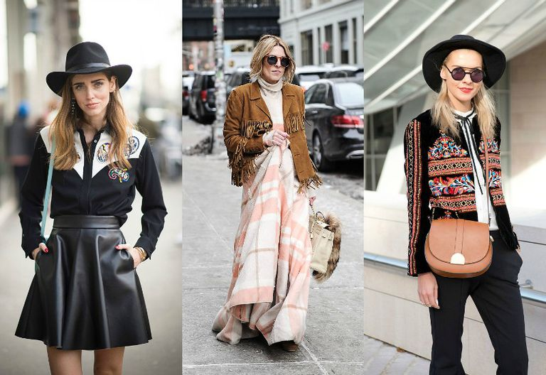

The Wild West Side
As the leaves start to fall from the trees in Riverside Park, we find ourselves reaching for cozy layers and autumnal accessories in the hues of our favorite warm beverages. There’s the burnt orange of a pumpkin spice latte, the light caramel brown of a chai, or simply the classic black of a morning coffee. But what makes each fall season different from the last is the style in which we embody our favorite elements of the season. During Fall ‘17 fashion shows, runways were inundated with styles from the southwest; imagine the wardrobe of an authentic cowboy, complete with leather boots, a fringed jacket, and a wide-brimmed hat. Recreating the dynamic looks worn by runway models can be intimidating, so here’s a roundup of staple pieces that you should add to your closet this fall and how you can rock them on campus.
One Step at a Time
The first essential in any fall wardrobe should be a stylish, yet versatile, pair of boots. This season, make your go-to choice a pair that channel your inner cowboy and get ready to strut your stuff down college walk. If you’re someone who tends to wear a lot of black and white, search for a black leather pair to match the rest of your daily ensemble; if you find yourself gravitating towards a variety of hues, the classic brown might be the best fit for you. Either way, be sure to find a pair that is comfortable and practical for all of your NYC exploring. Whichever style you choose, you can pair your boots with dark denim and a warm sweater for dinners downtown or library study sessions alike.
Fall for Fringe
Fringe and leather are two of the staple elements of southwestern style, so why not embrace both by adding a new jacket to your ranks. Last fall it was all about bomber jackets, but here’s your chance to try out a different fun and festive style. A classic leather jacket can be layered over your favorite top, sweater, or dress and coordinates perfectly with your go-to boots. The fringe detail is optional but an added bonus; if your look is otherwise plain, this fun embellishment will spice it up.
Top it Off
What’s more representative of the western style than a classic cowboy hat? Although such a hat might not be the lone answer to the chill of a New York November, it will disguise bad hair days and rushed mornings alike. Whether you don’t have time for a blow out, or you’re in need of an accessory to finish off your look, your favorite hat can always come to the rescue. Many styles are hitting the streets this season, such as the baker hat or French beret, but there’s always room for a wide-brimmed, suede hat in a variety of tones. Perhaps you’ll choose a hue to contrast that of your boots or jacket, or maybe you’ll match them to create a monochromatic ensemble. Either way, you can’t go wrong with a vintage style paired with a wide-leg jean, a button up top, or a seemingly effortless dress.